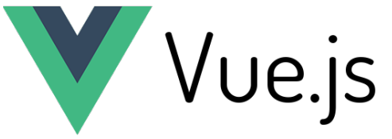
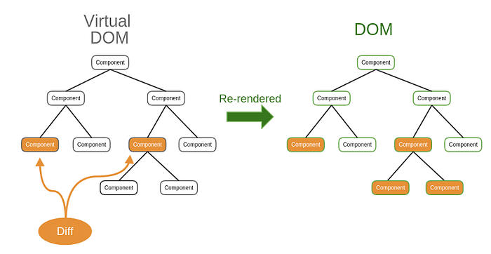

Навіщо нам потрібен Vue.js?

A JavaScript framework is a pre-written collection of code that simplifies common tasks in web development. It provides a structured way to build web applications, enforce best practices, and manage complex functionalities. Key components of a JavaScript framework include data binding, routing, and a component-based architecture.
Зв'язування даних - це механізм, який встановлює зв'язок між даними у застосунку та інтерфейсом користувача. Це дозволяє при зміні даних автоматично оновлювати інтерфейс і навпаки.
Маршрутизація (роутинг) - це процес визначення того, яке представлення або компонент повинен відображатися на основі поточної URL-адреси.
Компонентна архітектура - декомпозиція застосунку на багаторазові, самодостатні будівельні блоки.
Vue.js — це фреймворк, який працює на JavaScript, створений для розробки користувацьких інтерфейсів. Він працює на базі звичайного HTML, CSS та JavaScript з можливостями декларативно програмувати користувацькі інтерфейси будь-якої складності на основі компонентів.
Vue.js був створений у 2014 році Еваном Ю, колишнім співробітником Google.
Коли Еван Ю працював в Google Creative Labs, в нього виникла необхідність швидко побудувати прототип складного інтерфейсу, і потрібен був інструмент, щоб уникнути написання повторюваного HTML. React лише починався, AngularJS та Backbone були занадто громіздкі для прототипування, тому Еван створив свій фреймворк. З того часу Vue.js еволюціонував і дозволяє писати не тільки прототипи, а й складні вебзастосунки. Оригінальний реліз Vue відбувся в грудні 2014 року. Інформація про проєкт було розміщено на Hacker News, Echo JS в день початкового релізу. За один день проєкт з'явився на перших сторінках цих сайтів.
Vue.js модульний, що дозволяє розробникам використовувати лише ті частини фреймворку, які їм потрібні, а це робить його легким і ефективним.
Vue.js має велику й активну спільноту, яка надає розробникам багато ресурсів, таких як навчальні посібники, плагіни та бібліотеки.
Vue.js був прийнятий багатьма компаніями, включаючи Alibaba, Xiaomi та GitLab, завдяки його простоті використання та продуктивності.
Основні функції Vue.js: розробка складних реактивних інтерфейсів, декларативний рендеринг, реалізація анімації за допомогою CSS, зв’язування даних тощо.
Vue.js часто використовують в проєктах, яким потрібно додати реактивності, відображати значення при введенні даних користувачами.
Третя сфера застосування – фронтенд блогів та інших ресурсів на популярних CMS. З використанням Vue.js можна створювати динамічні інтерфейси. Вони реагують на поведінку і адаптуються під кожного користувача.
Завдяки маленькому розміру основної бібліотеки фреймворк майже не навантажує проєкти, в яких його використовують. Vue.js відносять до прогресивних фреймворків. Його легко масштабувати та застосовувати для великих, високонавантажених односторінкових застосунках

Бібліотека – це набори попередньо написаних фрагментів коду, які можна легко інтегрувати до існуючого коду проекту. Таким чином, бібліотека є спеціалізованим інструментом для конкретних вузьких потреб, а не універсальним рішенням для розробки всього проекту.
Фреймворк є «шаблоном» для створення веб-додатку. Він забезпечує структуру, де можна розмістити весь проект. «Шаблони» фреймворку створюють структуру з певними виділеними областями для вбудовування коду, та знаходиться на більш високому рівні абстракції у порівнянні з бібліотекою.

Реактивність - це здатність реагувати на зміну даних та синхронізувати їх відображення.

Двостороннє зв'язування (two-way data binding) у Vue.js означає, що зміни в моделі даних автоматично відображаються в користувацькому інтерфейсі, а зміни в інтерфейсі автоматично оновлюють модель даних. Це дозволяє зручно синхронізувати стан програми та забезпечує зручність роботи з формами та іншими інтерактивними елементами. Example.
У більшості випадків ми працюємо з даними, тому що, завдяки двосторонньому зв'язуванню та реактивності можемо бути абсолютно впевненими, що дані синхронізовано з відображенням. Аже працювати з об'єктами,що мають поля, набагато зручніше, ніж з html сторінкою, у якій є різні html-елементи, кожен зі своїми івентами, властивостями і т.д.
Декларативність — одна з ключових концепцій Vue.js, яка означає, що розробник описує, що потрібно зробити, а не як це зробити. У декларативному підході розробник визначає кінцевий стан інтерфейсу, а фреймворк бере на себе завдання синхронізації стану даних з DOM.
DOM (Document Object Model) — це програмний інтерфейс для HTML документів. Він представляє документ у вигляді дерева об'єктів, де кожен об'єкт є частиною документа. DOM дозволяє програмам і скриптам динамічно надавати доступ до вмісту документа та змінювати його структуру, стиль і вміст тощо. Основні концепції DOM: Дерево об'єктів, вузли (Nodes), доступ до елементів, маніпуляція елементами, події.
DOM — це деревоподібна структура, яка представляє елементи вебсторінки та їхні зв’язки один з одним. Віртуальний DOM — це концепція програмування на JavaScript, яка використовується для ефективного оновлення фактичної об’єктної моделі документа (DOM) вебсторінки.
Віртуальний DOM служить посередником між кодом JavaScript і DOM, що дає змогу швидше оновлювати вебсторінку. Коли ви вносите зміни до вебсторінки за допомогою JavaScript, віртуальний DOM спочатку оновлює свою власну деревоподібну структуру, а потім зміни відображаються у фактичному DOM. Цей підхід більш ефективний, оскільки не вимагає оновлення всього DOM щоразу, коли відбувається зміна. Натомість оновлюється лише та частина DOM, яка була змінена
Подумайте про Virtual DOM як про проєкт або чорнову версію будинку. Ви можете вносити зміни в проєкт, але вони не будуть відображені в фактичному будинку, доки ви їх не передасте. Це економить час і зусилля, оскільки ви можете внести кілька змін до проєкту, перш ніж застосувати їх до будинку (Medium: Virtual DOM)
Декларативний рендеринг - Vue розширює стандартний HTML шаблонним синтаксисом, який дозволяє нам декларативно задавати структуру HTML на основі стану описаного у JavaScript. Example.
Компоненти — це блоки, які дозволяють нам розділити інтерфейс користувача (UI) на незалежні частини, які можна багаторазово використовувати, і думати про кожну частину окремо. Documentation.

Приклади у директорії examples
Vue.js значно спрощує роботу з DOM, автоматизуючи такі операції, як умовний рендеринг та ітерації.
У чистому JavaScript потрібно вручну додавати слухачі подій і оновлювати DOM, тоді як у Vue.js весь процес реактивного оновлення відбувається автоматично, що робить код більш простим і чистим.
Чистий JavaScript вимагає більше ручного управління станом і DOM-елементами.
Vue.js значно спрощує обробку форм завдяки двосторонній прив'язці даних (v-model) і директивам для подій.
Щоб розпочати роботу з Vue.js, вам спочатку потрібно створити новий проєкт. Один із найпростіших способів зробити це — використати Vue CLI: cli-service
Vue CLI — інструмент командного рядка, який допомагає швидко налаштувати новий проєкт Vue.js із базовою файловою структурою та певною конфігурацією за замовчуванням.
create-vue - the recommended way to start a Vite-powered Vue project (Створення застосунку Vue)